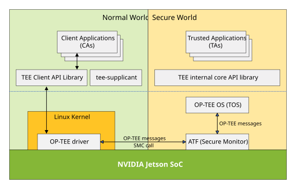
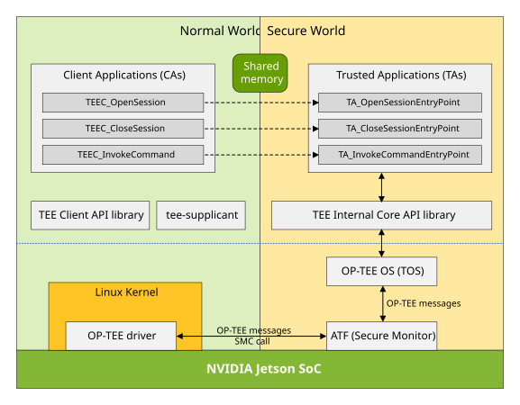
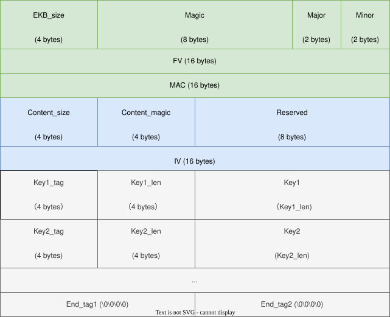
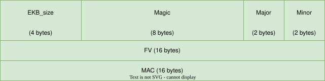
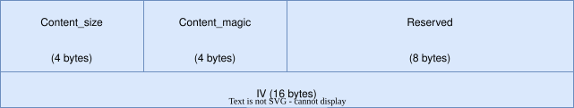
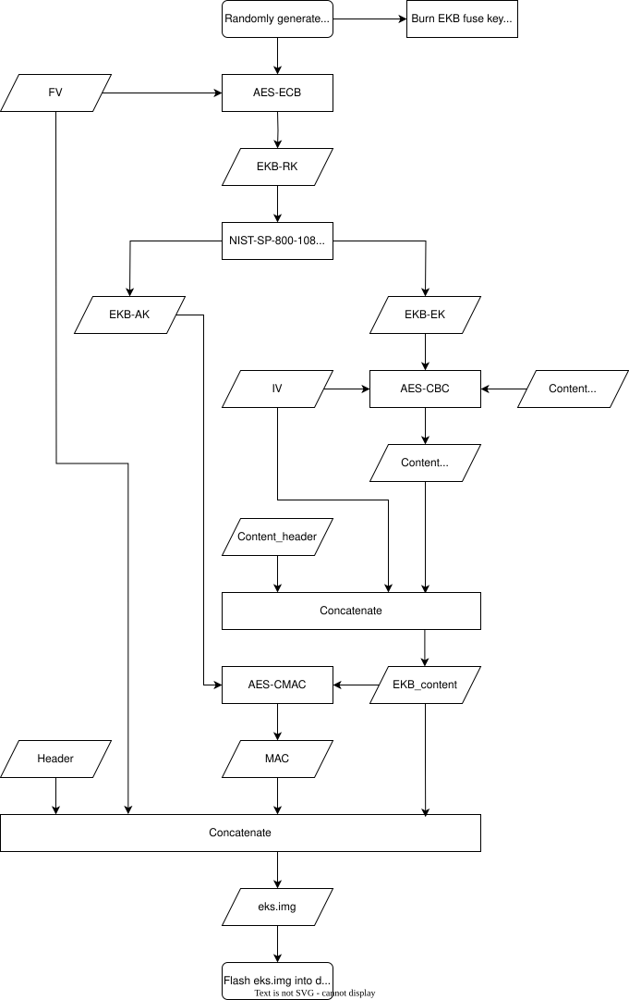
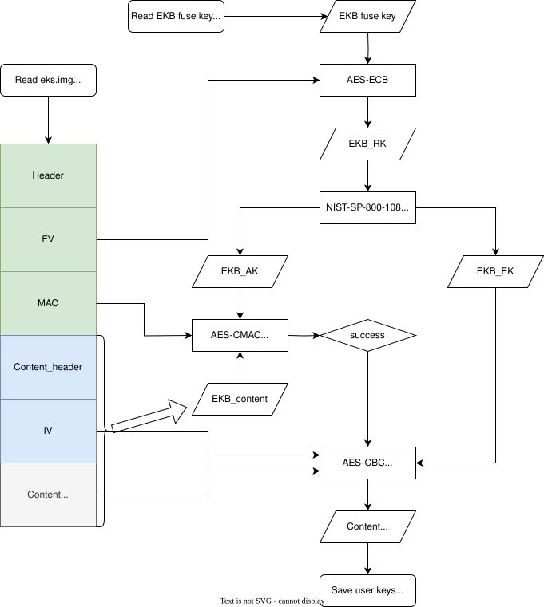
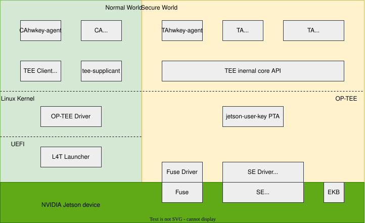
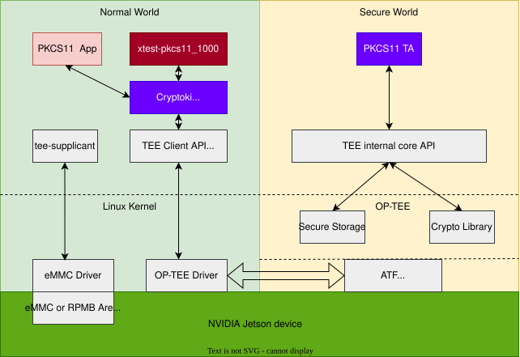

OP-TEE: Open Portable Trusted Execution Environment#
Applies to the Jetson AGX Orin series, the Jetson Orin NX series, and the Jetson Orin Nano series.
Open Portable Trusted Execution Environment (OP-TEE) is an open-source trusted execution environment (TEE) based on Arm® TrustZone® technology, created by trustedfirmware.org, and maintained by Linaro.
The overall framework of OP-TEE combines with two major components: optee_os, which is the trusted side of the TEE (the secure world), and optee_client, which is the untrusted, or “normal,” side of the TEE (the normal world).
optee_os is a TEE operating system running at ARMv8 secure EL-1 level. It provides generic OS-level functions
like interrupt handling, thread handling, crypto services, and shared memory. It implements the
GlobalPlatform
TEE Internal Core API.
You can use this API to build Trusted Applications (TAs) that run in the secure world at ARMv8 secure EL-0 level.
optee_client has three components: a normal world user space library, a normal world PKCS #11 crypto interface library, and a normal world user space daemon.
The library libteec.so implements the GlobalPlatform TEE Client API,
which defines the interface with which normal world Client Applications (CAs) communicate with the TA in the secure world.
The library libckteec.so implements the PKCS #11 Cryptographic Token Interface Base Specification Version 2.40 based on the TEE Client API and a PKCS #11 TA.
The daemon tee-supplicant implements some miscellaneous features for TrustedOS, for example, file system access
to load the TAs from the normal world file system into the secure world.
OP-TEE Documentation is available on the Web. The documentation source files are in ReStructuredText (RST) format, and are available from the OPTEE/optee_docs project on GitHub.
The OP-TEE project also provides a sanity test suite,
optee_test,
which offers thousands of tests, collectively known as xtest. See the optee_test project itself and the
optee_test documentation
for more information.
OP-TEE in Jetson Linux#
OP-TEE in NVIDIA® Jetson™ Linux enables you to boot OP-TEE on supported Jetson devices. The version of OP-TEE in NVIDIA® Jetson™ Linux 36.3 is v4.2.0. The following sections explain how to set up and use OP-TEE.
This topic uses some terms that are specific to trusted applications and OP-TEE in particular:
ATF: Arm Trusted Firmware.
CA: Client Application.
TA: Trusted Application; any application that runs within OP-TEE.
TEE: Trusted Execution Environment, the secure environment provided by OP-TEE for running trusted applications.
TOS: An acronym for “Trusted OS.” OP-TEE is a TOS supported by Jetson Linux.
Architecture#
OP-TEE resides in a separate storage partition and boots as part of a chain of trust or a secure boot sequence. It creates two environments in a device with different security modes:
Non-Secure Environment (NSE): An environment for running software components in non-secure mode. This environment constitutes the “normal world.” A rich OS, such as Linux, typically runs in this environment.
Trusted Execution Environment (TEE): A separate environment that provides trusted operations and runs in a secure mode enforced by hardware. This environment constitutes the “secure world.” OP-TEE runs in this environment.
The normal world OS and OP-TEE software operate in a client-server relationship, with OP-TEE as the server.
Bootloader allocates a dedicated carveout, TZ-DRAM, to run OP-TEE or another secure OS. All secure operations are initiated by a client application running in the non-secure environment. A trusted application, in the secure world, never initiates contact with the non-secure environment.
This diagram shows the relationships among the components:

Execution Steps#
When a client application (CA) must perform a secure operation, it sends a request to a trusted application (TA) by calling functions in the TEE Client API library.
The TEE Client API library routes the request to the OP-TEE Linux Kernel Driver.
The OP-TEE Linux Driver routes the client application request to Arm Trusted Firmware (ATF).
A monitor routes the request to the OP-TEE OS.
The Jetson Linux monitor implementation is based on ATF. For more information about ATF, see the Trusted Firmware A (TF-A).
The OP-TEE OS framework determines which trusted application (TA) is to handle the request.
The OP-TEE OS framework passes control to the TA to handle the request.
Upon completion, execution control returns along the reverse path to the client application, which receives a return value and any processed data.
Trusted Application and Client Application Development#
This section gives a brief overview of the OP-TEE Trusted Application and Client Application (TA/CA) architecture.
The OP-TEE TA/CA is a client-server model that follows the GlobalPlatform TEE API. The Client Application uses the TEE Client API to invoke the Trusted Application service in the secure world. The Trusted Application implements the functions defined by TEE Internal Core API Specification.
This diagram shows a simplified working model of the OP-TEE TA/CA and the APIs that the TAs must implement to support the model.

Shared Memory is a memory block which the OP-TEE framework uses internally to communicate data between CAs in the non-secure world and TAs in the secure world. See the hello_world sample application in GitHub for a working example.
How to Cross Compiling a Trusted Application and Run it on Jetson Devices#
Download the appropriate Jetson-Linux toolchain from Jetson release page (https://developer.nvidia.com/embedded/jetson-linux-archive).
Create a folder and extract the toolchain in this folder:
mkdir jetson-toolchain
cd jetson-toolchain
tar xf <bootlin toolchain gcc package>
Download the appropriate Jetson-Linux BSP source package from Jetson release page (https://developer.nvidia.com/embedded/jetson-linux-archive).
Create a folder, extract the BSP source package in this folder, and extract the nvidia-jetson-optee-source.tbz2 file.
mkdir jetson-public-srcs
cd jetson-public-srcs
tar xf <public_sources.tbz2>
cd Linux_for_Tegra/source
mkdir jetson-optee-srcs
cd jetson-optee-srcs
tar xf ../nvidia-jetson-optee-source.tbz2
To build the OP-TEE components (including the OP-TEE image, optee_client, and optee_test files), complete the steps in the
atf_and_optee_README.txtfile. This file is a part of thenvidia-jetson-optee-source.tbz2file. ATF and TOS image building is only needed when plan to change the Jetson OP-TEE.
Note
You need to build the Jetson OP-TEE source package because the user CA and TA building requires the optee_client and optee_os header files and configurations.
Run the following command to build your trusted application.
make -C <source directory> \
CROSS_COMPILE="<jetson-toolchain>/bin/aarch64-buildroot-linux-gnu-" \
TA_DEV_KIT_DIR="<jetson-optee-srcs>/optee/build/t234/export-ta_arm64/" \
OPTEE_CLIENT_EXPORT="<jetson-optee-srcs>/optee/install/t234/usr" \
TEEC_EXPORT="<jetson-optee-srcs>/optee/install/t234/usr" \
-j"$(nproc)"
Copy the CA to the
/usr/sbindirectory of your Jetson device.Copy the TA to the
/lib/optee_armtzdirectory of your Jetson device.You can now run the CA. When the CA requests services from the TA, OP-TEE automatically loads the TA from
/lib/optee_armtz.
How to Implement a New Trusted Application or Port an Existing One#
Every TA must conform to a structure determined by the TA/CA model, and when you design a new TA, it must conform too. See the
Trusted Applications
section of the OP-TEE official documentation for a detailed description with a hello_world example. This section explains useful concepts and shows you how to create and set up
a TA step by step from the beginning of the process through TA signing and encryption.
To port an existing TA from another TOS to OP-TEE, you must replace the application’s original API calls with calls to the GlobalPlatform TEE API. For example, a Trusty TA uses IPC to handle low-level message communication between the TA and CAs. For OP-TEE functions in both TA and CA sides. To operate with OP-TEE it must use an RPC (Remote Procedure Call) function instead. See the GlobalPlatform API section of the OP-TEE documentation for information about the API the client uses. Other Trusty API calls must be replaced by other OP-TEE Internal Core API calls.
There are two groups of cryptographic functions you may use. The GlobalPlatform TEE Internal Core API provides procedures for using the cryptographic functions
provided by optee_os. Alternatively,you may use the
MbedTLS library,
which is bundled with optee_os. If the original TA already uses one of these groups of functions, no conversion is needed.
Types of Trusted Applications#
There are two types of TAs, user mode TAs and pseudo TAs (PTAs). See the Trusted Applications section in the “Architecture” chapter of the OP-TEE official documentation for a more detailed description. Jetson Linux provides secure sample apps for both types.
A user mode TA runs as a secure application in ARMv8 S-EL0 mode, which is the user space layer of the secure world. It gets OS services exclusively by calling the GlobalPlatform TEE Internal Core API. When you implement a new TA or port an existing TA from another TEE, it is of this type.
A pseudo TA runs in ARMv8 S-EL1 mode, which is the OS layer of the secure world. Running in this layer, a pseudo TA cannot use the GlobalPlatform TEE Internal Core API. If you need a specific secure function that the API does not provide, you can implement it in a pseudo TA and export it as a function to user mode TAs. For example, you can implement pseudo TAs to provide user mode TAs with access to hardware drivers.
Subkeys#
Subkeys is an implementation specific to OP-TEE that provides a public key hierarchy. Subkeys can be delegated to allow different actors to sign different TAs without sharing a private key.
Refer to OP-TEE’s document about Subkeys for more details.
EKB: Encrypted Key Blob#
Different security functions often need different types of keys to encrypt, decrypt, authenticate, and verify data. These keys are usually confidential and sensitive, and compromising them would have serious consequences. As a complement to fuse, Encrypted Key Blob (EKB) is designed to meet user’s requirement for additional storage for security keys and data. Its usage is completely defined by the user, making it flexible and scalable.
The EKB is encrypted by the EKB Encryption Key (EKB_EK) and authenticated by the EKB Authentication Key (EKB_AK), both of which are derived from a hardware-backed key (EKB Fuse Key). The EKB content is visible in plaintext only to the secure world. In this section, we will introduce how EKB works and how to use it. Although we designed EKB to store user keys, it can also be used to save any sensitive data.
Note
The EKB can only be updated through OTA but not at runtime.
An EKB binary is often called “eks_t<platform>.img,” which is the filename of the EKB binary that is flashed to the EKS partition by default. For example, the EKB binary for the Jetson AGX Orin series, the Jetson Orin NX series, and the Jetson Orin Nano series is eks_t234.img.
Prerequisites#
In order to better understand how EKB works, you need to understand the following specialized terms.
Keyslot#
A secure storage area in the Jetson Security Engine (SE) that protects the secure keys from unauthorized reading and writing.
For the Jetson AGX Orin series, the Jetson Orin NX series, and the Jetson Orin Nano series, during the early boot, PSC-BL1 loads the secure keys from fuse storage to the keyslots so that OP-TEE can use SE later to derive the keys from the keyslots.
EKB Fuse Key#
An AES key that is burned into a fuse.
This key is not visible to the software, but OP-TEE uses it during boot through the SE to derive EKB_RK, which is the EKB Root Key. For the Jetson AGX Orin series, the Jetson Orin NX series, and the Jetson Orin Nano series, this key has 256 bits and can be burned into the OEM_K1 fuse or the OEM_K2 fuse. We recommend that you use the OEM_K1 fuse as the EKB fuse key.
EKB_RK#
A 128-bit AES key that is derived from the EKB Fuse Key.
Note
You must not use this key directly, but use it to derive keys. Then use the derived key to encrypt and authenticate data.
EKB_EK#
A 128-bit AES key that is derived from EKB_RK, and it is is used only to encrypt and decrypt EKB.
EKB_AK#
A 128-bit AES key that is derived from EKB_RK, and it is is used only to authenticate EKB content.
Note
NVIDIA strongly recommends that you use the same KDF as OP-TEE to generate different keys for different purposes. For example, use EKB_EK to encrypt and decrypt EKB content and use EKB_AK to authenticate EKB content.
SE#
The Jetson Security Engine.
MB2#
The Bootloader stage that passes the EKB to OP-TEE. The boot flow executes MB2 before the Trusted OS is initialized.
Key Derivation Function (KDF)#
A Key derivation function to derive EKB_EK and EKB_AK. OP-TEE uses a Key Derivation Function (KDF) that follows NIST-SP-800-108.
Pseudocode for the NIST-SP-800-108 algorithm:
NIST-SP-800-108(KI, KO, L, context_string, label_string) {
uint8_t count = 0x01;
for (count=0x01; count<=L/128; count++) {
AES-128-CMAC(key=KI, count || label_string || 0x00 || context_string || L, output=&KO[count*128]);
}
}
Where:
KIis a 128-bit or 256-bit input keyKOis a output keyLis multiple of 128, the bit length of KO.context_stringandlabel_stringhave the values shown in this table:
Below are the derivation parameters required to derive EKB_EK and EKB_AK from EKB_RK.
Derived Key |
context_string |
label_string |
|---|---|---|
|
“ekb” |
“encryption” |
|
“ekb” |
“authentication” |
EKB Format#
The EKB format is designed to be as generic as possible, giving you full control of the actual key blob structure. Below is the EKB layout:

Note
It is designed to save user keys or similar data, and the user can customize the format of the EKB.
EKB Header#
The EKB header contains Header (this data includes EKB_size, Magic, Major, and Minor), FV, and MAC. The EKB header is consumed and parsed by OP-TEE. It must match the following layout:

EKB_size is the length of the EKB binary starting from the Magic field. EKB_size is four bytes long, in little endian format. Its value must be 4 less than the length of the EKB binary in bytes.
Magic is eight bytes long, and must contain the exact string "NVEKBP\0\0".
Major is two bytes long, the current major version is 2.
Minor is two bytes long, the current minor version is 0.
FV is a fixed vector that has a fixed 16-byte value and is part of the EKB_RK key derivation. It can be generated with a random number generator. NVIDIA recommends using /dev/random or /dev/urandom. This command generates a 16-byte random number and saves it in hexadecimal form:
$ openssl rand -rand /dev/urandom -hex 16 > fv_hex_file
Note
For EKB version 1, FV is a hardcoded 16-byte value. For EKB version 2, FV is a randomly generated 16-byte value and stored right after EKB the field Minor.
MAC is a message authentication code, used to authenticate the data from content header to the end. It is generated by the AES-CMAC algorithm using EKB_AK.
EKB Content Header#
The EKB content header contains Content_header (this data included Content_size, Content_magic, and Reserved.) and IV. The EKB content header information is parsed by OP-TEE. It must match the following layout:

Content_size is the length of the encrypted EKB key data starting after the IV field. Content_Size is four bytes long, in little endian format.
Content_magic is four bytes long, and must contain the exact string "EEKB".
Reserved is an 8 bytes reserved field for future use. Its default value is zero.
IV is 16 bytes long, and it is used to encrypt and decrypt the EKB key data with EKB_EK. IV can be generated with a random number generator. NVIDIA recommends using /dev/random or /dev/urandom. This command generates a 16-byte random number and saves it in hexadecimal form:
$ openssl rand -rand /dev/urandom -hex 16 > iv_hex_file
EKB Key Format#
The EKB content may contain any number of key or similar data and is ended by a End_tag1 (0000) and a End_tag2 (0000). The EKB content format is as below.
Key_tag is the type of data stored in the EKB. Key_tag is four bytes long, in little endian format.
Key_len is four bytes long, it indicates the length of the data that follows.
Key is data content of the tag, and the data content length is indicated by Key_len.
You can add additional keys or data to the EKB by adding key or data that conform to the EKB key format(key_tag, Key_len, Key) and extending the script (see Tool for EKB Generation) to support additional keys.
EKB Binary Size Restrictions#
For security reasons, an EKB binary must be at least 1024 bytes long, and it must not exceed the EKS partition size. If an EKB binary’s size is not in this range, flashing fails.
If you have very little EKB content, the EKB generation tool will pad the EKB binary to a length of at least 1024 bytes. The jetson-user-key PTA in OP-TEE will decrypt the entire binary, then discard the padding.
EKB Generation#
The sample EKB layout is intended to help you design a sufficiently secure mechanism to protect private data in the EKB. It stores user-defined keys in the EKB. As the figures under EKB Format show, you can easily extend EKB content, for example, by adding EKB keys in the EKB key format for multiple keys.
NVIDIA recommends that you use the EKB layout described in EKB Format. However, you can always replace it with a customized layout.
The following will describe the generation process of EKB in more detail through the formula.
Define a format for the EKB content and generate the EKB content in plaintext.
Generate a symmetric key as an EKB fuse key. For the Jetson AGX Orin series, the Jetson Orin NX series, and the Jetson Orin Nano series, the key size must be 256 bits.
Burn the EKB fuse key into the device’s fuse.
For the Jetson AGX Orin series, Jetson Orin NX series, and Jetson Orin Nano series, the fuse is OEM_K1.
For more information about the fuses, see the Fuse Specification Application Note for your Jetson device.
For more information, see the topic Secure Boot.
Generate a random FV and save it to
FVfield in EKB header.Compute
EKB_RKby using AES ECB encryption based on the following formula:EKB_RK= AES−128−ECB(FV, EKB fuse key)Follow the NIST-SP-800-108 KDF recommendation to derive
EKB_EKandEKB_AK.EKB_EK= NIST-SP-800-108-KDF(Key =EKB_RK, Label = “ekb”, Context = “encryption”)EKB_AK= NIST-SP-800-108-KDF(Key =EKB_RK, Label = “ekb”, Context = “authentication”)Generate a random IV and save it in
IVfield in EKB content header, encrypt theContent (plaintext)withEKB_EKandIV, using the desired crypto algorithm to obtain theContent (ciphertext).Content (ciphertext)= AES-128-CBC(IV,EKB_EK,Content (plaintext))Concatenate the
Content_header,IV, and theContent (ciphertext).EKB_content=Content_header+IV+Content (ciphertext)Calculate the MAC of the
EKB_contentwithEKB_AK, using the desired crypto algorithm to obtain a MAC and save it to theMACfield ofEKB_header.MAC= AES−CMAC(Key =EKB_AK,EKB_content)Concatenate
EKB_headerandEKB_contentas described in EKB Format. The resulting file is a fully generated EKB binary.EKB=EKB header+EKB_contentFlash the EKB binary to the Jetson device’s EKS partition.
This flow diagram illustrates the EKB generation process:

Tool for EKB Generation#
Before you generate the EKB, refer to Secure Boot for more information about burning keys into fuses, including the OEM_K1 or OEM_K2 fuse, and the Secure Boot requirements for using OP-TEE on Jetson devices.
You can generate user-defined keys separately by running the openssl tool from the command line and store them in different files.
Note
For EKB version 1, a hardcoded FV in the EKB generation tool is used for EKB generation, and the same FV is hardcoded in OP-TEE for EKB extraction.
For EKB version 2, FV is a randomly generated 16-byte value and stored in EKB. This FV is used for EKB generation and EKB extraction.
The EKB generation tool in the current JetPack release supports only EKB version 2. But the extraction in jetson-user-key PTA is backward compatible. It still supports EKB version 1.
The following example shows you how to run the EKB generation tool for the Jetson AGX Orin series, Jetson Orin NX series, and Jetson Orin Nano series:
$ python3 gen_ekb.py -chip t234
-oem_k1_key <oem_k1.key> \
-in_sym_key <sym_t234.key> \
-in_sym_key2 <sym2_t234.key> \
-in_auth_key <auth_t234.key> \
-out <eks_t234.img>
Where:
<oem_k1.key>is the key that is stored in the OEM_K1 fuse.<sym_t234.key>is the UEFI payload encryption key.In current L4T reference implementation, this is the UEFI payload encryption key provided by the
--uefi-encoption in the flash command(refer to Prepare the User Key in the topic Secure Boot for more information). The encryption key must be the same as the one used to encrypt custom-built kernel images.<sym_t234.key>is the disk encryption key.This key is used in two reference implementations. One is the secure sample implemented by hwkey-agent and hwkey-app. This sample uses the key for data encryption and decryption. In the other case, the key is the source key of the key generation of the LUKS key in the disk encryption reference implementation.
<auth_t234.key>is the UEFI variable authentication key.In current L4T reference implementation, this is the UEFI Variable Protection key. The authentication key is saved in EKB and used by OP-TEE.
<eks_t234.img>is the output image file which is intended to be flashed onto the EKS partition of the device.
Note
For the Jetson AGX Orin series, the Jetson Orin NX series, and the Jetson Orin Nano series, you can copy and substitute
<Linux_for_Tegra>/bootloader/eks_t234.imgby using the EKS image you create. As described in the EKB generation section, the EKS image is encrypted and signed by the OEM_K1 (or OEM_K2 in earlier releases). To test the EKS feature on a board, where OEM_K1 has not been burned, OP-TEE uses a pre-defined hard-coded key instead of OEM_K1. However, after the security mode fuse is burned (make sure OEM_K1 fuse is burned before the security mode fuse), the EKS image must be created with the OEM_K1 value as the signing and encryption key. Refer toexample.sh, which is in the OP-TEE source package for an example of an EKS image that is generated with the test key.To update the EKB image in the EKS partitions with Capsule update, by default the EKB image is packed to the Capsule payload. If the EKB image does not need to be updated, refer to To Customize the BUP for more information about how to not pack the EKB image to the Capsule payload.
Because EKB version 2 introduced randomized FV, changes to the FV result in changes to the HUK. However, the secure storage root key is derived from the HUK. So changes to the FV (updates to the EKS image) cause secure storage to become unusable. Therefore, we introduce the -reuse_fv option to use the same FV as the input EKS image for the newly generated EKS image.
The following example shows you how to run the EKB generation tool to generate a new EKS image from an existing EKS image for the Jetson AGX Orin series, Jetson Orin NX series, and Jetson Orin Nano series:
$ python3 gen_ekb.py -chip t234
-oem_k1_key <oem_k1.key> \
-in_sym_key <sym_t234.key> \
-in_sym_key2 <sym2_t234.key> \
-in_auth_key <auth_t234.key> \
-reuse_fv <old_eks_t234.img> \
-out <eks_t234.img>
EKB Extraction#
The following outline shows the most logical sequence of operations for extracting information from an EKB. It is essentially the reverse of the
process for EKB generation. During boot, the jetson-user-key PTA in OP-TEE performs the following steps:
Requests the SE to derive the
EKB_RKwith the following formula:EKB_RK= AES−128−ECB(FV, EKB fuse key)Derives
EKB_EKandEKB_AKfollowing the NIST-SP-800-108 KDF.EKB_EK= NIST-SP-800-108-KDF(Key =EKB_RK, Label = “ekb”, Context = “encryption”)EKB_AK= NIST-SP-800-108-KDF(Key =EKB_RK, Label = “ekb”, Context = “authentication”)Authenticates the
EKB_contentwithEKB_AKandMACstored in the EKS image using the chosen crypto algorithm.MAC= AES−CMAC(EKB_AK,EKB_content)If authenticates success, decrypts the
EKB_contentwithEKB_EKandIVfromEKB_content_headerand using the chosen crypto algorithm to obtain plaintext.Content (plaintext)= AES−128−CBC(IV,EKB_EK,Content (ciphertext))Extracts user keys in
EKB key foramtfromContent (plaintext)and stores user keys into a linked list. Then utilizes the keys as desired within the PTA.
The following diagram shows the process of EKB extraction.

EKB Extraction Sample#
For an example of how to perform EKB extraction, see the source code of the jetson-user-key PTA in OP-TEE.
SE Keyslot Clearing#
The fuse keys are loaded into keyslots during an early boot stage before OP-TEE runs. Because software cannot read them back from the keyslots, a TA can only derive the keys from the keyslots through SE. After the EKB fuse key in the keyslot is being used, the EKB fuse key no longer needs to persist in the keyslot. To prevent a component from using this key after the device boots, NVIDIA strongly recommends that you wipe the key from the keyslot.
The person who uses the EKB fuse key is responsible for clearing the key. You can clear the keyslot by calling the tegra_se_clear_aes_keyslots() function provided by the SE driver.
Sample Applications#
The diagram below shows an overview of secure sample applications. There are:
A PTA,
jetson-user-keyPTA in the OP-TEE OSThree CAs and TAs,
hwkey-agentTA andluksTA with corresponding CAs in the normal world user space,cpubl-payload-decTA with the corresponding CA in L4T Launcher.

Jetson User Key PTA#
The jetson user key TA is a pseudo TA that is bundled with OP-TEE OS and runs at OS layer. This TA provides APIs to the user TA and exports these APIs to the user TA via GlobalPlatform TEE API.
Note
Before studying the service interface of this PTA, you should understand how the GlobalPlatform TEE API defines the application communication interface and flow. This pattern applies to communication between TA and TA, TA and PTA, and CA and TA.
The user TA initializes a session with the PTA using
TEE_OpenTASession. Establishing a session requires theUUIDof the PTA as input so that it knows which PTA to communicate with.After the session is created, the TA calls the service in the PTA using
TEE_InvokeTACommand, with the command ID and parameters stored in the structureTEE_Param. TheTEE_Paramstructure can store two types of data, a value or a memory reference pointer.
The jetson-user-key PTA provides EKB key management, user key services, random number generator, key derivation function, and CPUBL payload decryption services.
EKB Key Management#
The jetson-user-key PTA shows how to derive keys from the SE keyslot and derive other keys for different security purposes.
OEM_K1: Root key forRPMB_KeyandEKB_RK.OEM_K2: Root key forSSK_RK.RPMB_Key: Per-device unique key derived fromOEM_K1. This key should be provisioned to the eMMC device and generated at runtime. The runtime generated key must be exactly the same as the key provisioned to the eMMC device.SSK_RK: Per-device unique key derived fromOEM_K2. You can use it to encrypt data that is bound to the device. Thejetson-user-keyPTA does not use this key, but only shows how to derive it.User Keys: User-defined keys stored in the EKB.
The jetson-user-key PTA extracts user-defined keys from EKB and saves the keys into a linked list. For security reasons, all the keys should not leave the jetson-user-key PTA, at least not leave the secure world, and the PTA services can only be accessed by user TA.
User Key Services#
The jetson-user-key pta provides three APIs for users to get keys.
The user space TA can get a derived key from the user-defined keys through
jetson-user-keyPTA interface via command IDJETSON_USER_KEY_CMD_GEN_KEYandKey_tag.The user space TA can get a per-device unique derived key from a user-defined keys through
jetson-user-keyPTA interface via command IDJETSON_USER_KEY_CMD_GEN_UNIQUE_KEY_BY_EKBandKey_tag.The user space TA can also get the user keys through the
jetson-user-keyPTA interface directly via the command IDJETSON_USER_KEY_CMD_GET_EKB_KEYandKey_tag.
Note
Although we provide the API for the user TA to directly get the user keys, we do not recommend doing so because it will cause the user key to leave the jetson-user-key PTA.
Random Number Generator#
The GlobalPlatform TEE Internal API provides an interface for the user TA to get random numbers from OP-TEE. This hooks into HW RNG.
/* Cryptographic Operations API - Random Number Generation Functions */ void TEE_GenerateRandom(void *randomBuffer, uint32_t randomBufferLen);
In addition to this, the user TA can also access the hardware RNG through jetson-user-key PTA interface via the command ID JETSON_USER_KEY_CMD_GET_RANDOM.
Key Derivation Function#
The software-based NIST-SP 800-108 KDF in jetson-user-key PTA. This function implements a counter-mode KDF with AES-CMAC as PRF.
/* * A software-based NIST-SP 800-108 KDF. * derives keys from a key in a key buffer. * * *key [in] input key for derivation. * key_len [in] length of input key in bytes. * *context [in] a pointer to a NIST-SP 800-108 context string. * *label [in] a pointer to a NIST-SP 800-108 label string. * dk_len [in] length of the derived key in bytes (16 or any multiple of 16). * *out_dk [out] a pointer to the derived key. */ TEE_Result nist_sp_800_108_cmac_kdf(uint8_t *key, uint32_t key_len, char const *context, char const *label, uint32_t dk_len, uint8_t *out_dk);
The user TA can access the software-based NIST 800-108 KDF through the jetson-user-key PTA interface via the command ID JETSON_USER_KEY_CMD_GEN_KEY.
CPUBL Payload Decryption Services#
The jetson-user-key PTA provides UEFI payload decryption services, supporting decryption of UEFI payloads during the boot process. The PTA gets the UEFI payload encryption key from the user key linked list and then uses the key to decrypt the UEFI payload.
HWKEY AGENT CA and TA#
The hwkey-agent CA is a command-line program that illustrates how to encrypt and decrypt data using user-defined keys stored in the EKB and get random numbers from the hwkey-agent TA.
This hwkey-agent TA is a user space TA that provides two functions for the hwkey-agent CA: data encryption and decryption, and getting random numbers.
Data Encryption and Decryption#
Typically, the hwkey-agent CA issues a request to encrypt or decrypt data, and then the hwkey-agent TA transparently transmit the request to the jetson-user-key PTA to get a derived key based on a pre-defined user key stored in EKB, and then hwkey-agent TA uses this key to encrypt or decrypt the data.
For demonstration only, the jetson-user-key PTA uses the disk encryption key to derive the encrypt or decrypt key.
Get a Random Number#
Typically, the hwkey-agent CA issue a request to get a random number, and then the hwkey-agent TA does not process the request directly but instead transparently transmit the request to the jetson-user-key PTA to get a random number based on hardware RNG.
LUKS CA and TA#
This is the disk encryption CA and TA. Typically, the luks CA communicates with the luks TA to retrieve the passphrase. The luks TA supports disk encryption functionality with one-time passphrase generation during boot time to unlock the encrypted disk.
Refer to Disk Encryption for more information about the luks CA and TA.
CPUBL Payload Decryption CA and TA#
The L4T launcher takes the role of the cpubl-payload-dec CA, and communicates with cpubl-payload-dec TA to decrypt the UEFI payloads (Kernel, Kernel-DTB and Initrd).
Typically, the cpubl-payload-dec CA (L4T launcher) sends a decryption request to the cpubl-payload-dec TA at boot time. After receiving the request, the cpubl-payload-dec TA will not decrypt the images directly but will transparently transmit the request to jetson-user-key PTA, which will finally decrypt the image.
Refer to UEFI Payload Encryption for more information about the cpubl-payload-dec CA and TA.
PKCS #11 Support in OPTEE#
Cryptoki Introduction#
In cryptography, PKCS #11 is one of the Public-Key Cryptography Standards and refers to the programming interface used to create and manipulate cryptographic tokens, where the secret is a cryptographic key.
The PKCS #11 standard defines a platform-independent API for interacting with cryptographic tokens, such as hardware security modules (HSM) and smart cards. The API is officially named _Cryptoki_ (derived from “cryptographic token interface” and pronounced as “crypto-key”). However, PKCS #11 is often used interchangeably to refer to the API and the standard that defines it.
This API specifies the most commonly used cryptographic object types (RSA keys, X.509 certificates, DES/Triple DES keys, etc.) and all the functions needed to create, generate, modify, delete, and use these objects.
The primary goal of PKCS #11 is to allow applications to securely and consistently use the features of cryptographic tokens. This enables developers to focus on their application’s functionality without worrying about the intricacies of token-specific interfaces.
Some key features of PKCS #11 include token management, key management, encryption, and decryption.
Token Management#
The ability to manage and configure cryptographic tokens, such as loading or unloading keys.
Key Management#
The ability to create, store, and retrieve encryption keys.
Encryption and Decryption#
The ability to perform various types of encryption and decryption operations.
For more details about PKCS #11, please refer to PKCS #11 Cryptographic Token Interface Base Specification Version 2.40.
Cryptoki Implementation in OPTEE#
The Cryptoki specific implementation in OP-TEE is located in the libckteec directory of optee_client, which complies with the PKCS #11 Cryptographic Token Interface Base Specification Version 2.40. The source code is located in the src subdirectory, and to build your own PKCS #11 application, you need to include the header files in the include subdirectory.
This diagram shows the relationships among the components:

You can visit PKCS #11 Driver to learn how to integrate PKCS #11 in Linux user land with OPTEE.
PKCS #11 TA#
The PKCS #11 TA is the trusted application that supports PKCS #11 in OPTEE. It serves as the backend of for libteec, with its specific implementation located in the ta/pkcs directory of optee_os. This is a user TA, implemented and maintained by OPTEE. The source code is located in the src subdirectory. To call the PKCS #11 TA, you need include the header files in the include subdirectory.
PKCS #11 SAMPLE CA#
For a working example of Cryptoki in action, refer to the PKCS #11 Sample Application located in the app/samples/pkcs11-sample directory. This application primarily demonstrates the usage of C_GenerateKey to generate keys and C_WrapKey to wrap keys and unwrap keys from the wrapped key object.